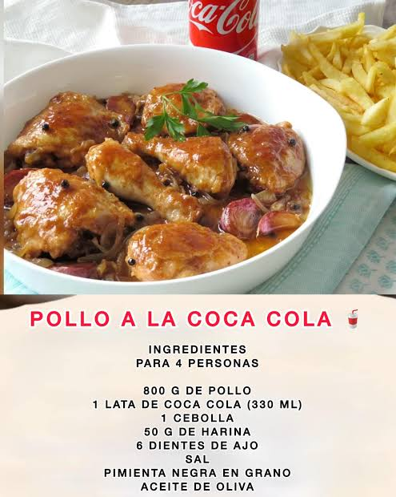

Inicio
Pollo a la Coca-Cola

Ingredientes e instrucciones
El pollo a la Coca-Cola es un plato casero y popular donde las piezas de pollo se cocinan en una salsa agridulce hecha a base de refresco de cola.
Ingredientes
- 800g de pollo
- 1 lata de Coca-Cola 330ml
- 1 cebolla
- 50g de harina
- sal
- pimienta negra en grano
- aceite de oliva
Instrucciones
- En una olla agrega la cebolla picada, sofrie luego agrega el pollo envuelto en harina
- Condimenta con sal y pimienta
- Agrega aceite de oliva y la coca cola
- Emplata y a disfrutar